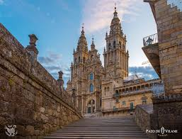

Galicia es una comunidad autónoma española, considerada nacionalidad histórica según su estatuto de autonomía, situada en el noroeste de la península ibérica. Está formada por las provincias de La Coruña, Lugo, Orense y Pontevedra, que se componen de trescientos trece municipios agrupados en cincuenta y tres comarcas. La capital desde la aprobación del estatuto de autonomía en 1982, es la ciudad de Santiago de Compostela. Vigo es su municipio con más población y La Coruña el municipio más densamente poblado.
Foto de la Catedral de Santiago de Compostela
